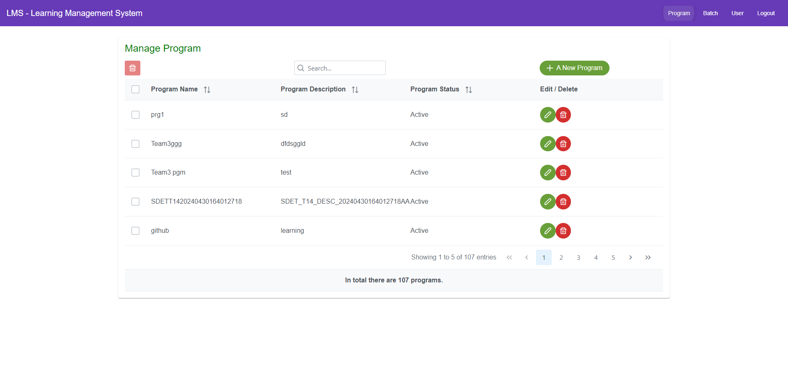
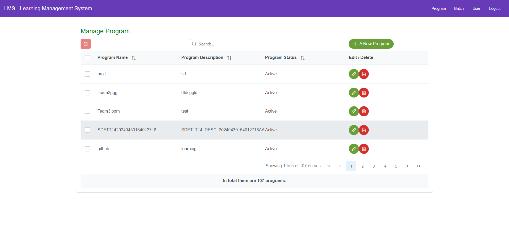
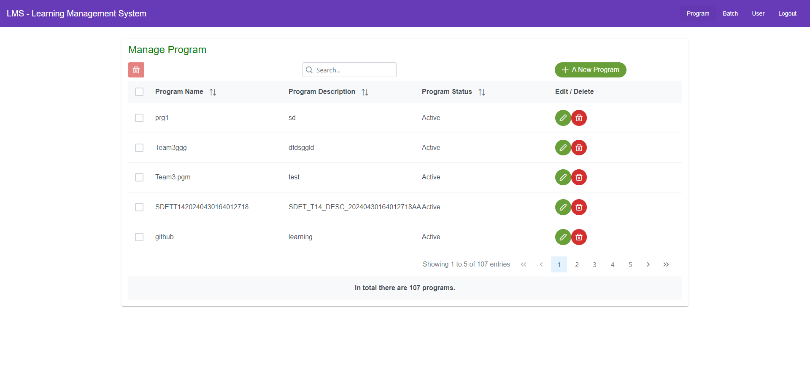

local_offer Category
- @ManageProgram-11
- @Navigation_Validation_from_Manage_Program_to_other_Pages-03
- @Sorting(DataOrdering)Validation-01
- @Navigation_Validation_from_Manage_Program_to_other_Pages-01
- @ManageProgram-06
- @ManageProgram-05
- @Pagination-04
- @Sorting(DataOrdering)Validation-03
- @ManageProgram-01
- @Pagination-03
- @ManageProgram-03
- @ManageProgram-09
- @ManageProgram-12
- @LoginPage
- @ManageProgram-04
- @Pagination-01
- @ManageProgram-10
- @Sorting(DataOrdering)Validation-02
- @Navigation_Validation_from_Manage_Program_to_other_Pages-02
- @Sorting(DataOrdering)Validation-06
- @Sorting(DataOrdering)Validation-04
- @Pagination-02
- @ManageProgram-08
- @ManageProgram-02
- @Sorting(DataOrdering)Validation-05
- @ProgramModule
- @ManageProgram-07
- @tag1
- Clear Filters
Features
0 features passed
2 features failed,
0 skipped
Scenarios
20 scenarios passed
6 scenarios failed,
0 skipped,
0 others
Steps
94 steps passed
6 steps failed,
8 skipped,
0 others
Timeline (seconds)
-
Login Page Functionality May 2, 2024 01:38:40 PM Fail00 00 00.083cancel Scenario Outline: Validate Login with valid Credentials
Sheetname RowNumber LoginInfo 0 -
cancelValidate Login with valid Credentials@LoginPage @tag1
-
cancelGiven Admin is in Home Page
Step undefined -
redoWhen Admin enters sheetname "LoginInfo" rownumber "0" and clicks login button
Step skipped -
redoThen Admin should land on dashboard page
Step skipped
-
-
-
Validate Program functionality May 2, 2024 01:38:41 PM Fail00 00 07.705cancel Scenario: Validate landing in Program page@ProgramModule @ManageProgram-01
-
check_circleGiven Logged on the LMS portal as Admin
-
check_circleGiven Admin is on dashboard page of program module after Login
-
check_circleWhen Admin clicks "Program" on the navigation bar
-
cancelThen Admin should see URL with "Manage Program"
-
check_circlecom.LMS.AppHooks.ApplicationHooks.take_screenshot(io.cucumber.java.Scenario)Validate_landing_in_Program_page
00 00 04.263cancel Scenario: Validate the heading@ProgramModule @ManageProgram-02-
check_circleGiven Logged on the LMS portal as Admin
-
cancelGiven Admin is on dashboard page of program module after Login
-
check_circlecom.LMS.AppHooks.ApplicationHooks.take_screenshot(io.cucumber.java.Scenario)Validate_the_heading
-
redoWhen Admin clicks "Program" on the navigation barStep skipped
-
redoThen Admin should see a heading with text "Manage+ Program" on the pageStep skipped
00 00 21.896cancel Scenario: Validate the text and pagination icon below the data table@ProgramModule @ManageProgram-03-
check_circleGiven Logged on the LMS portal as Admin
-
check_circleGiven Admin is on dashboard page of program module after Login
-
check_circleWhen Admin clicks "Program" on the navigation bar
-
cancelThen Admin should see the text as "Showing x to y of z entries" along with Pagination icon below the table.x starting record number on that page y ending record number on that page z Total number of records
-
check_circlecom.LMS.AppHooks.ApplicationHooks.take_screenshot(io.cucumber.java.Scenario)Validate_the_text_and_pagination_icon_below_the_data_table
00 00 00.792check_circle Scenario: Validate the footer@ProgramModule @ManageProgram-04-
check_circleGiven Logged on the LMS portal as Admin
-
check_circleGiven Admin is on dashboard page of program module after Login
-
check_circleWhen Admin clicks "Program" on the navigation bar
-
check_circleThen Admin should see the footer as "In total there are z programs".z Total number of records
00 00 00.675check_circle Scenario: Validating the default state of Delete button@ProgramModule @ManageProgram-05-
check_circleGiven Logged on the LMS portal as Admin
-
check_circleGiven Admin is on dashboard page of program module after Login
-
check_circleWhen Admin clicks "Program" on the navigation bar
-
check_circleThen Admin should see a Delete button on the top left hand side as Disabled
00 00 00.689check_circle Scenario: Validate Add New Program@ProgramModule @ManageProgram-06-
check_circleGiven Logged on the LMS portal as Admin
-
check_circleGiven Admin is on dashboard page of program module after Login
-
check_circleWhen Admin clicks "Program" on the navigation bar
-
check_circleThen Admin should see a "+A New Program" button on the program page above the data table
00 00 01.469check_circle Scenario: Validate that number of records (rows of data in the table) displayed@ProgramModule @ManageProgram-07-
check_circleGiven Logged on the LMS portal as Admin
-
check_circleGiven Admin is on dashboard page of program module after Login
-
check_circleWhen Admin clicks "Program" on the navigation bar
-
check_circleThen Admin should see the number of records (rows of data in the table) displayed on the page are 5
00 00 02.735check_circle Scenario: Verify data table on the Program page@ProgramModule @ManageProgram-08-
check_circleGiven Logged on the LMS portal as Admin
-
check_circleGiven Admin is on dashboard page of program module after Login
-
check_circleWhen Admin clicks "Program" on the navigation bar
-
check_circleThen Admin should see data table on the Manage Program Page with following column headers (Program Name, Program Description, Program Status, Edit,Delete)
00 00 02.488check_circle Scenario: Verify Sort arrow icon on the data table@ManageProgram-09 @ProgramModule-
check_circleGiven Logged on the LMS portal as Admin
-
check_circleGiven Admin is on dashboard page of program module after Login
-
check_circleWhen Admin clicks "Program" on the navigation bar
-
check_circleThen Admin should see the sort arrow icon beside to each column header except Edit and Delete
00 00 08.773check_circle Scenario: Verify Check box on the data table@ProgramModule @ManageProgram-10-
check_circleGiven Logged on the LMS portal as Admin
-
check_circleGiven Admin is on dashboard page of program module after Login
-
check_circleWhen Admin clicks "Program" on the navigation bar
-
check_circleThen Admin should see check box on the left side in all rows of the data table
00 00 03.770check_circle Scenario: Verify Edit and Delete buttons@ProgramModule @ManageProgram-11-
check_circleGiven Logged on the LMS portal as Admin
-
check_circleGiven Admin is on dashboard page of program module after Login
-
check_circleWhen Admin clicks "Program" on the navigation bar
-
check_circleThen Admin should see the Edit and Delete buttons on each row of the data table
00 00 01.268check_circle Scenario: Verify Search bar on the Program page@ProgramModule @ManageProgram-12-
check_circleGiven Logged on the LMS portal as Admin
-
check_circleGiven Admin is on dashboard page of program module after Login
-
check_circleWhen Admin clicks "Program" on the navigation bar
-
check_circleThen Admin should see Search bar with text as "Search..."
00 00 01.978cancel Scenario: Validates Sorting(data ordering) on the Program Data table@ProgramModule @Sorting(DataOrdering)Validation-01-
check_circleGiven Logged on the LMS portal as Admin
-
cancelGiven Admin is on Manage Program page
-
check_circlecom.LMS.AppHooks.ApplicationHooks.take_screenshot(io.cucumber.java.Scenario)Validates_Sorting(data_ordering)_on_the_Program_Data_table

-
redoWhen Admin clicks the sort icon of program name columnStep skipped
-
redoThen The data get sorted on the table based on the program name column values in ascending orderStep skipped
00 00 09.038check_circle Scenario: Verify Search bar on the Program page@Sorting(DataOrdering)Validation-02 @ProgramModule-
check_circleGiven Logged on the LMS portal as Admin
-
check_circleGiven The data is in the ascending order on the table based on Program Name column
-
check_circleWhen Admin clicks the sort icon of programname column
-
check_circleThen The data get sorted on the table based on the program name column values in descending order
00 00 09.156check_circle Scenario: Verify Search bar on the Program page@Sorting(DataOrdering)Validation-03 @ProgramModule-
check_circleGiven Logged on the LMS portal as Admin
-
check_circleGiven Admin is on Manage Program page
-
check_circleWhen Admin clicks the sort icon of program Desc column
-
check_circleThen The data get sorted on the table based on the program description column values in ascending order
00 00 09.002check_circle Scenario: Verify Search bar on the Program page@ProgramModule @Sorting(DataOrdering)Validation-04-
check_circleGiven Logged on the LMS portal as Admin
-
check_circleGiven The data is in the ascending order on the table based on Program Description column
-
check_circleWhen Admin clicks the sort icon of program Desccolumn
-
check_circleThen The data get sorted on the table based on the program description column values in descending order
00 00 01.867cancel Scenario: Verify Search bar on the Program page@ProgramModule @Sorting(DataOrdering)Validation-05-
check_circleGiven Logged on the LMS portal as Admin
-
cancelGiven Admin is on Manage Program page
-
check_circlecom.LMS.AppHooks.ApplicationHooks.take_screenshot(io.cucumber.java.Scenario)Verify_Search_bar_on_the_Program_page

-
redoWhen Admin clicks the sort icon of program Status columnStep skipped
-
redoThen The data get sorted on the table based on the program status column values in ascending orderStep skipped
00 00 08.746check_circle Scenario: Verify Search bar on the Program page@ProgramModule @Sorting(DataOrdering)Validation-06-
check_circleGiven Logged on the LMS portal as Admin
-
check_circleGiven The data is in the ascending order on the table based on Program Status column
-
check_circleWhen Admin clicks the sort icon of programStatus1 column
-
check_circleThen The data get sorted on the table based on the program status column values in descending order
00 00 02.305check_circle Scenario: Verify Next page link@Pagination-01 @ProgramModule-
check_circleGiven Logged on the LMS portal as Admin
-
check_circleGiven Admin is on Manage Program page
-
check_circleWhen Admin clicks Next page link on the program table
-
check_circleThen Admin should see the Pagination has "Next" active link
00 00 00.940check_circle Scenario: Verify Last page link@ProgramModule @Pagination-02-
check_circleGiven Logged on the LMS portal as Admin
-
check_circleGiven Admin is on Manage Program page
-
check_circleWhen Admin clicks Last page link
-
check_circleThen Admin should see the last page record on the table with Next page link are disabled
00 00 01.379check_circle Scenario: Verify First page link@ProgramModule @Pagination-03-
check_circleGiven Logged on the LMS portal as Admin
-
check_circleGiven Admin is on last page of Program table
-
check_circleWhen Admin clicks First page link
-
check_circleThen Admin should see the previous page record on the table with pagination has previous page link
00 00 01.466check_circle Scenario: Verify Start page link@ProgramModule @Pagination-04-
check_circleGiven Logged on the LMS portal as Admin
-
check_circleGiven Admin is on Previous Program page
-
check_circleWhen Admin clicks Start page link
-
check_circleThen Admin should see the very first page record on the table with Previous page link are disabled
00 00 01.347check_circle Scenario: Batch link on navigation bar@ProgramModule @Navigation_Validation_from_Manage_Program_to_other_Pages-01-
check_circleGiven Logged on the LMS portal as Admin
-
check_circleGiven Admin is on Manage Program page
-
check_circleWhen Admin clicks on Batch link on Manage Program page
-
check_circleThen Admin is re-directed to Batch page
00 00 01.392check_circle Scenario: User link on navigation bar@ProgramModule @Navigation_Validation_from_Manage_Program_to_other_Pages-02-
check_circleGiven Logged on the LMS portal as Admin
-
check_circleGiven Admin is on Manage Program page
-
check_circleWhen Admin clicks on User link on Manage Program page
-
check_circleThen Admin is re-directed to User page
00 00 01.327check_circle Scenario: Logout link on navigation bar@ProgramModule @Navigation_Validation_from_Manage_Program_to_other_Pages-03-
check_circleGiven Logged on the LMS portal as Admin
-
check_circleGiven Admin is on Manage Program page
-
check_circleWhen Admin clicks on Logout link on Manage Program page
-
check_circleThen Admin is re-directed to Login page
-
-
@ManageProgram-11 1Passed: 1
Timestamp TestName Status May 2, 2024 01:39:33 PM Verify Edit and Delete buttons Pass -
@Navigation_Validation_from_Manage_Program_to_other_Pages-03 1Passed: 1
Timestamp TestName Status May 2, 2024 01:40:27 PM Logout link on navigation bar Pass -
@Sorting(DataOrdering)Validation-01 1Failed: 1
Timestamp TestName Status May 2, 2024 01:39:38 PM Validates Sorting(data ordering) on the Program Data table Fail -
@Navigation_Validation_from_Manage_Program_to_other_Pages-01 1Passed: 1
Timestamp TestName Status May 2, 2024 01:40:24 PM Batch link on navigation bar Pass -
@ManageProgram-06 1Passed: 1
Timestamp TestName Status May 2, 2024 01:39:16 PM Validate Add New Program Pass -
@ManageProgram-05 1Passed: 1
Timestamp TestName Status May 2, 2024 01:39:16 PM Validating the default state of Delete button Pass -
@Pagination-04 1Passed: 1
Timestamp TestName Status May 2, 2024 01:40:23 PM Verify Start page link Pass -
@Sorting(DataOrdering)Validation-03 1Passed: 1
Timestamp TestName Status May 2, 2024 01:39:49 PM Verify Search bar on the Program page Pass -
@ManageProgram-01 1Failed: 1
Timestamp TestName Status May 2, 2024 01:38:41 PM Validate landing in Program page Fail -
@Pagination-03 1Passed: 1
Timestamp TestName Status May 2, 2024 01:40:21 PM Verify First page link Pass -
@ManageProgram-03 1Failed: 1
Timestamp TestName Status May 2, 2024 01:38:53 PM Validate the text and pagination icon below the data table Fail -
@ManageProgram-09 1Passed: 1
Timestamp TestName Status May 2, 2024 01:39:21 PM Verify Sort arrow icon on the data table Pass -
@ManageProgram-12 1Passed: 1
Timestamp TestName Status May 2, 2024 01:39:37 PM Verify Search bar on the Program page Pass -
@LoginPage 1Failed: 1
Timestamp TestName Status May 2, 2024 01:38:40 PM Validate Login with valid Credentials Fail -
@ManageProgram-04 1Passed: 1
Timestamp TestName Status May 2, 2024 01:39:15 PM Validate the footer Pass -
@Pagination-01 1Passed: 1
Timestamp TestName Status May 2, 2024 01:40:18 PM Verify Next page link Pass -
@ManageProgram-10 1Passed: 1
Timestamp TestName Status May 2, 2024 01:39:24 PM Verify Check box on the data table Pass -
@Sorting(DataOrdering)Validation-02 1Passed: 1
Timestamp TestName Status May 2, 2024 01:39:40 PM Verify Search bar on the Program page Pass -
@Navigation_Validation_from_Manage_Program_to_other_Pages-02 1Passed: 1
Timestamp TestName Status May 2, 2024 01:40:25 PM User link on navigation bar Pass -
@Sorting(DataOrdering)Validation-06 1Passed: 1
Timestamp TestName Status May 2, 2024 01:40:09 PM Verify Search bar on the Program page Pass -
@Sorting(DataOrdering)Validation-04 1Passed: 1
Timestamp TestName Status May 2, 2024 01:39:58 PM Verify Search bar on the Program page Pass -
@Pagination-02 1Passed: 1
Timestamp TestName Status May 2, 2024 01:40:20 PM Verify Last page link Pass -
@ManageProgram-08 1Passed: 1
Timestamp TestName Status May 2, 2024 01:39:19 PM Verify data table on the Program page Pass -
@ManageProgram-02 1Failed: 1
Timestamp TestName Status May 2, 2024 01:38:49 PM Validate the heading Fail -
@Sorting(DataOrdering)Validation-05 1Failed: 1
Timestamp TestName Status May 2, 2024 01:40:07 PM Verify Search bar on the Program page Fail -
@ProgramModule 20 5Passed: 20 Failed: 5
Timestamp TestName Status May 2, 2024 01:38:41 PM Validate landing in Program page Fail May 2, 2024 01:38:49 PM Validate the heading Fail May 2, 2024 01:38:53 PM Validate the text and pagination icon below the data table Fail May 2, 2024 01:39:15 PM Validate the footer Pass May 2, 2024 01:39:16 PM Validating the default state of Delete button Pass May 2, 2024 01:39:16 PM Validate Add New Program Pass May 2, 2024 01:39:17 PM Validate that number of records (rows of data in the table) displayed Pass May 2, 2024 01:39:19 PM Verify data table on the Program page Pass May 2, 2024 01:39:21 PM Verify Sort arrow icon on the data table Pass May 2, 2024 01:39:24 PM Verify Check box on the data table Pass May 2, 2024 01:39:33 PM Verify Edit and Delete buttons Pass May 2, 2024 01:39:37 PM Verify Search bar on the Program page Pass May 2, 2024 01:39:38 PM Validates Sorting(data ordering) on the Program Data table Fail May 2, 2024 01:39:40 PM Verify Search bar on the Program page Pass May 2, 2024 01:39:49 PM Verify Search bar on the Program page Pass May 2, 2024 01:39:58 PM Verify Search bar on the Program page Pass May 2, 2024 01:40:07 PM Verify Search bar on the Program page Fail May 2, 2024 01:40:09 PM Verify Search bar on the Program page Pass May 2, 2024 01:40:18 PM Verify Next page link Pass May 2, 2024 01:40:20 PM Verify Last page link Pass May 2, 2024 01:40:21 PM Verify First page link Pass May 2, 2024 01:40:23 PM Verify Start page link Pass May 2, 2024 01:40:24 PM Batch link on navigation bar Pass May 2, 2024 01:40:25 PM User link on navigation bar Pass May 2, 2024 01:40:27 PM Logout link on navigation bar Pass -
@ManageProgram-07 1Passed: 1
Timestamp TestName Status May 2, 2024 01:39:17 PM Validate that number of records (rows of data in the table) displayed Pass -
@tag1 1Failed: 1
Timestamp TestName Status May 2, 2024 01:38:40 PM Validate Login with valid Credentials Fail
-
org.openqa.selenium.StaleElementReferenceException 3
Timestamp TestName StackTrace May 2, 2024 01:38:52 PM Given Admin is on dashboard page of program module after Login May 2, 2024 01:39:39 PM Given Admin is on Manage Program page May 2, 2024 01:40:08 PM Given Admin is on Manage Program page -
java.lang.AssertionError 1
Timestamp TestName StackTrace May 2, 2024 01:38:47 PM Then Admin should see URL with "Manage Program" -
org.openqa.selenium.NoSuchElementException 1
Timestamp TestName StackTrace May 2, 2024 01:38:54 PM Then Admin should see the text as "Showing x to y of z entries" along with Pagination icon below the table.x starting record number on that page y ending record number on that page z Total number of records
Dashboard
Features
2
Scenarios
26
Steps
108
Start
May 2, 2024 01:38:31 PM
End
May 2, 2024 01:40:29 PM
Time Taken
00 01 57.760
Environment
| Name | Value |
|---|---|
| Engineer | Team6_SeleniumSquad |
| Project | LMS_Phase2_Selenium |
| Browser | Google Chrome |
| os | Windows |
Categories
| Name | Passed | Failed | Skipped | Passed % |
|---|---|---|---|---|
| @ManageProgram-11 | 1 | 0 | 0 | 100% |
| @Navigation_Validation_from_Manage_Program_to_other_Pages-03 | 1 | 0 | 0 | 100% |
| @Sorting(DataOrdering)Validation-01 | 0 | 1 | 0 | 0% |
| @Navigation_Validation_from_Manage_Program_to_other_Pages-01 | 1 | 0 | 0 | 100% |
| @ManageProgram-06 | 1 | 0 | 0 | 100% |
| @ManageProgram-05 | 1 | 0 | 0 | 100% |
| @Pagination-04 | 1 | 0 | 0 | 100% |
| @Sorting(DataOrdering)Validation-03 | 1 | 0 | 0 | 100% |
| @ManageProgram-01 | 0 | 1 | 0 | 0% |
| @Pagination-03 | 1 | 0 | 0 | 100% |
| @ManageProgram-03 | 0 | 1 | 0 | 0% |
| @ManageProgram-09 | 1 | 0 | 0 | 100% |
| @ManageProgram-12 | 1 | 0 | 0 | 100% |
| @LoginPage | 0 | 1 | 0 | 0% |
| @ManageProgram-04 | 1 | 0 | 0 | 100% |
| @Pagination-01 | 1 | 0 | 0 | 100% |
| @ManageProgram-10 | 1 | 0 | 0 | 100% |
| @Sorting(DataOrdering)Validation-02 | 1 | 0 | 0 | 100% |
| @Navigation_Validation_from_Manage_Program_to_other_Pages-02 | 1 | 0 | 0 | 100% |
| @Sorting(DataOrdering)Validation-06 | 1 | 0 | 0 | 100% |
| @Sorting(DataOrdering)Validation-04 | 1 | 0 | 0 | 100% |
| @Pagination-02 | 1 | 0 | 0 | 100% |
| @ManageProgram-08 | 1 | 0 | 0 | 100% |
| @ManageProgram-02 | 0 | 1 | 0 | 0% |
| @Sorting(DataOrdering)Validation-05 | 0 | 1 | 0 | 0% |
| @ProgramModule | 20 | 5 | 0 | 80% |
| @ManageProgram-07 | 1 | 0 | 0 | 100% |
| @tag1 | 0 | 1 | 0 | 0% |